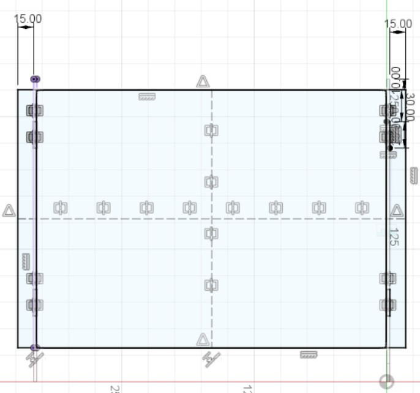

LAPTOP STAND
5
Leg Support
Measure a suitable height to place the computer, create a support design as below
After contraint all sketches and before extrude, go to "Modify" > "Change Parameter"
To summarise, parameters allows edit on the extrude distance without using edit feature or extrude, which is easier to change the thickness of certain bodies or component
When extrude, instead of entering distance(thickness), enter "legwidth"(according to the name given in parameter)
After extrude, copy paste this component to same design, remember not to move the copied component.
Next, use "join" function, hide leg support 2, choose one side of the support as one reference point, unhide support 2 and hide support 1, choose oppositeface(side)
Along Z-axis distance, instead of distance entered, use defined parameter name("legdistance" in this case)
Table board( Top )
Create new component, name top(to place computer)
Create sketch on the slanted surface instead of horizontal
Use "Create > "Project include, include another face
Create rectangle and colinear to the side(so when the legsupport distance increase, this component will increase also)
Use contruction line contraint to all midpoint of rectangle
Next create rectangle(act as join), which width is colinear to the width of leg support
Mirror the small rectangle(join) using the the contruction line as reference point

Extrude inwards the rectangle other than the small rectangle(not cut but new body), distance follow("legwidth" instead distance)
Next,"modify" tool > "combine" tool
Target body is the one need to be modified, Tool body is the one to make as reference(check the keep tools so will not loose the part)
Hide the top board or tool body to see the changes made
Bottom Support
Using the support as reference, offset plane from it using parameter or distance
Create sketch on that plan, create a rectangular and colinear contraint similar to previous steps
Sketch one line across the midpoint of rectangle
Extrude symmetric the designated sketches, except for small rectangle(join) to create the support (distance use legwidth parameter)
Next, use midplane to create a plane, use front and back plane of side support as reference
Mirror the created bottom support using midplane as reference, and modify using similar steps mentioned
Lastly fillet or chamfer the corners
Laptop Stand:
Animation
Under Design Tab, choose Animation
To move a component, select it and press transform, which is similar to move tool. Once it is move, it will be shown on the timeline where can adjust the duration
There is also auto explode which fusion 360 will automatically explode the components
Learn More
![]()